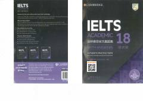

CIIELTS Academic imtihoni uchun rasmiy amaliy testlar to'plami.
Ushbu kitob talabalar va o'quvchilarga IELTS akademik imtihoniga tayyorgarlik ko'rish uchun mo'ljallangan rasmiy amaliy testlarni taqdim etadi. Nashr haqiqiy imtihon sharoitlariga moslashtirilgan to'rtta to'liq test materiali, javoblar kaliti va audiossenariylarni o'z ichiga oladi. Kitob imtihon formatini tushunish va o'z bilimlarini sinab ko'rishni istaganlar uchun juda qo'l keladi.